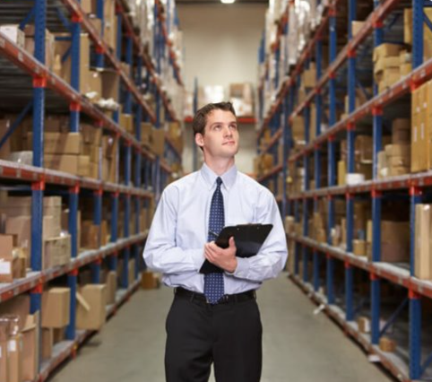
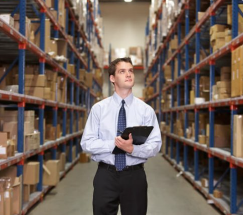

Nosotros
Una StartUp que busca promover el cuidado al medioambiente y darle una oportunidad de uso a los residuos que muchas empresas generan hoy en día
Una StartUp que busca promover el cuidado al medioambiente y darle una oportunidad de uso a los residuos que muchas empresas generan hoy en día
Brindamos oportunidades únicas de ahorro y mejora de la gestión de residuos para las empresas

Ser líderes en el sector de la reutilización y el reciclaje, con un acérrimo compromiso en materia de cumplimiento y un camino trazado en la senda del desarrollo sostenible. Con nuestra labor perseguimos una eficiente gestión de los recursos que permita favorecer la conversación de estos, de manera que estén disponibles para las generaciones presentes y futuras.
Omlife es una excelente oportunidad para llevar a cabo la gestión y manipulación de los residuos de una empresa
Omlife es un proyecto que le permite escanear la cantidad de residuos que desea eliminar de su almacén de forma rápida y sin complicaciones

El servicio de recolección es especial y confiable, todos los camiones están en buenas condiciones para la recolección. La fecha de entrega de los camiones es puntual
Nos preocupamos por el ambiente y tu economía